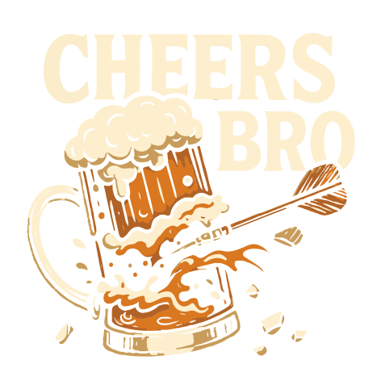

Deux équipes, Une passion commune.
Le championnat genevois de fléchettes.
Qu’il s’agisse de l’expérience des Cheers'Bro ou de la fraîcheur des Bros'n'darts , notre club vise l’excellence tout en cultivant un esprit d’équipe fort et fédérateur. Ensemble, nous lançons chaque fléchette avec fierté, détermination et passion.

Cheers'Bro
Fondé en 2019
Notre objectif est clair : rejoindre l'élite du championnat, viser toujours plus haut, et hisser les Cheers' Bros parmi les meilleures équipes de Genève.
Plus d'infos →
Bros'N'Darts
Lancés en 2025
Les Bros'n'darts sont une jeune équipe enthousiaste, constituée majoritairement de joueurs amateurs, mais animée par la même passion que leurs aînés.
Plus d'infos →